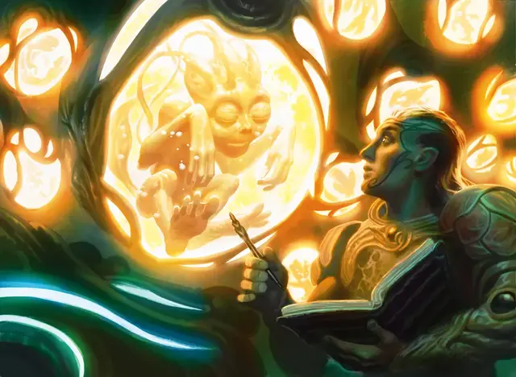

Биомант
Biomancer
Средний Гуманоид (Любая раса), нейтрально-добрый

Класс Доспеха 17 (наборный доспех)
Хиты 110 (17к8 + 34)
Скорость 30 футов
| мод | спас | ||
|---|---|---|---|
| СИЛ | 10 | +0 | +0 |
| ЛОВ | 15 | +2 | +2 |
| ТЕЛ | 14 | +2 | +2 |
| мод | спас | ||
|---|---|---|---|
| ИНТ | 20 | +5 | +9 |
| МДР | 14 | +2 | +6 |
| ХАР | 15 | +2 | +2 |
Навыки Магия +9, Природа +9
Чувства пассивное Восприятие 12
Языки Общий, плюс один любой язык
Опасность 10 (5900 опыта)
Бонус мастерства +4
Особенности
Поддерживающее присутствие. Биомант магическим образом излучает живительную энергию. Любой союзник биоманта, начавший ход в 30 футах от биоманта, восстанавливает 5 (1к10) хитов.
Сопротивление магии. Биомант совершает с преимуществом спасброски от заклинаний и других магических эффектов.
Использование заклинаний. Биомант — заклинатель Симиков 16-го уровня. Его базовая характеристика заклинаний — Интеллект (Сл спасброска 17, +9 к попаданию атаками заклинаниями). У него подготовлены следующие заклинания волшебника:
• Заговоры (неограниченно): брызги кислоты [acid splash], свет [light], починка [mending], ядовитые брызги [poison spray], электрошок [shocking grasp];
• 1 уровень (4 ячейки): обнаружение магии [detect magic], скольжение [grease], щит [shield];
• 2 уровень (3 ячейки): смена обличья [alter self], тёмное зрение [darkvision], увеличение/уменьшение [enlarge/reduce], удержание личности [hold person];
• 3 уровень (3 ячейки): контрзаклинание [counterspell], рассеивание магии [dispel magic], ускорение [haste], защита от энергии [protection from energy];
• 4 уровень (3 ячейки): смятение [confusion], призыв малых элементалей [conjure minor elementals], превращение [polymorph];
• 5 уровень (2 ячейки): конус холода [cone of cold], сотворение [creation], удержание чудовища [hold monster];
• 6 уровень (1 ячейка): движение почвы [move earth], ледяная стена [wall of ice];
• 7 уровень (1 ячейка): радужные брызги [prismatic spray];
• 8 уровень (1 ячейка): власть над погодой [control weather].
Действия
Скимитар. . Рукопашная атака оружием: +6 к попаданию, досягаемость 5 фт., одна цель. Попадание: 5 (1к6 + 2) рубящего урона.
Описание
Почти все инновации и достижения в биоинженерии симиков связаны с работой биомантов. Специалисты по гибридизации и изменению существ с помощью науки и магии, они породили бесчисленное количество гибридов и красисов в поисках идеального союза между природой и цивилизацией.